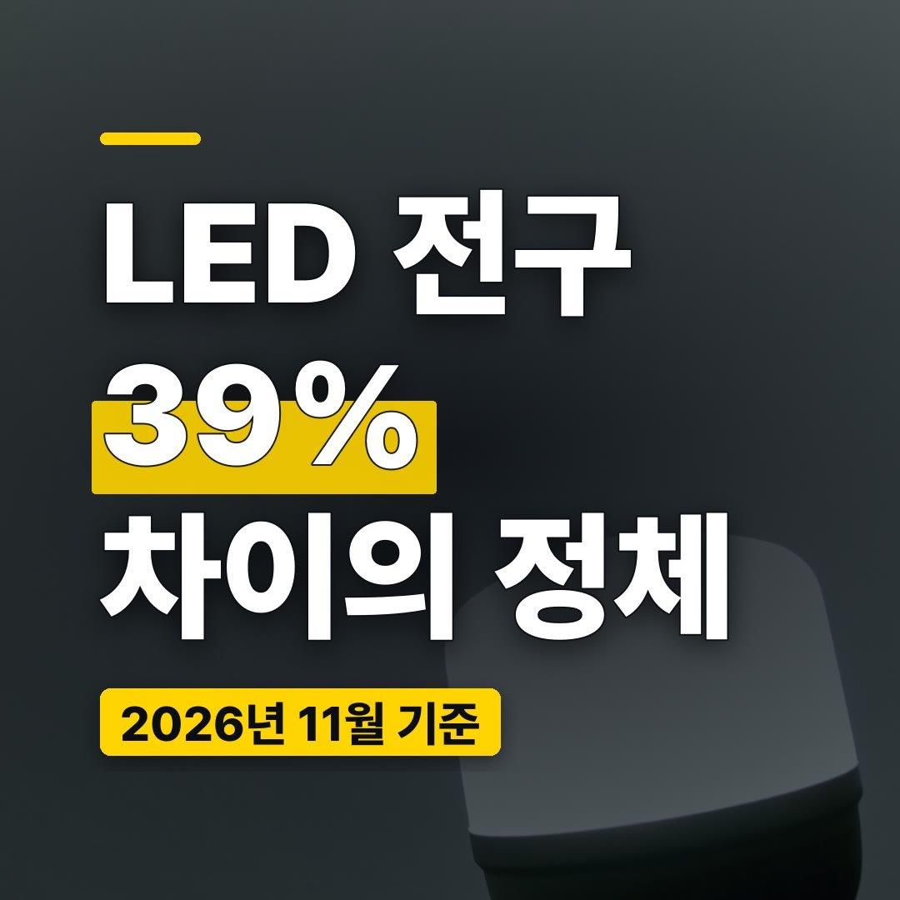
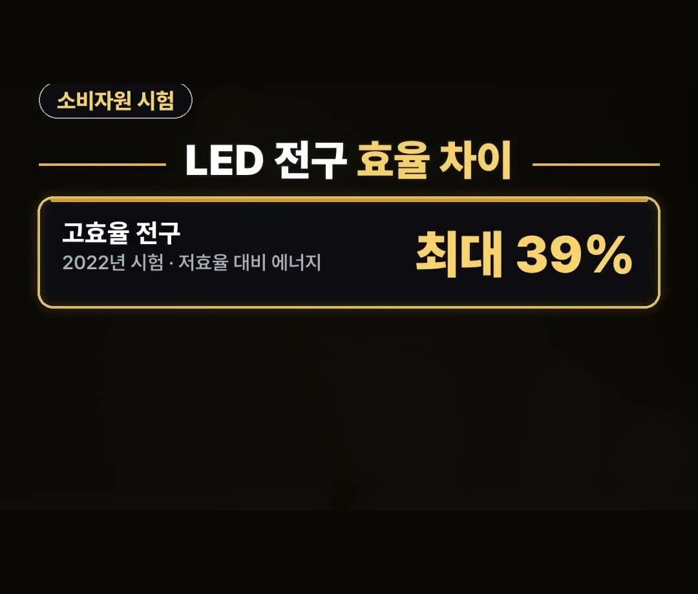
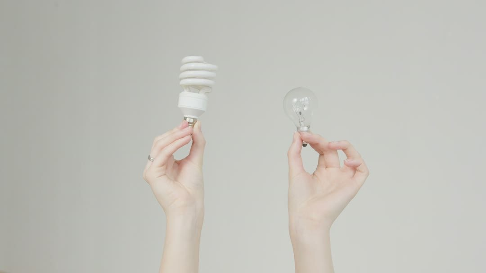
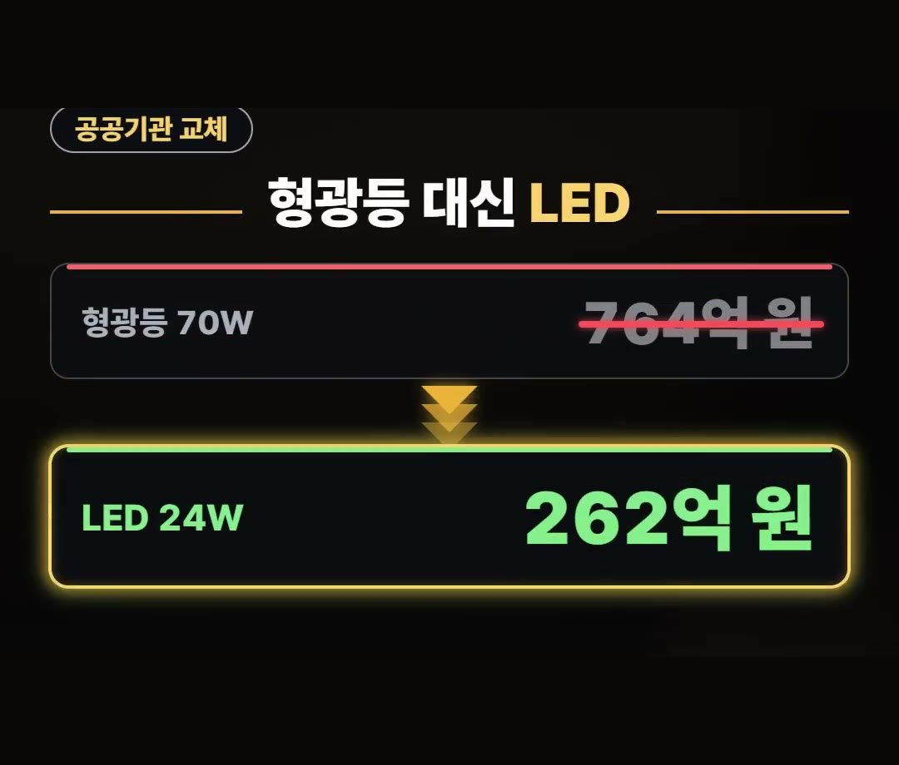
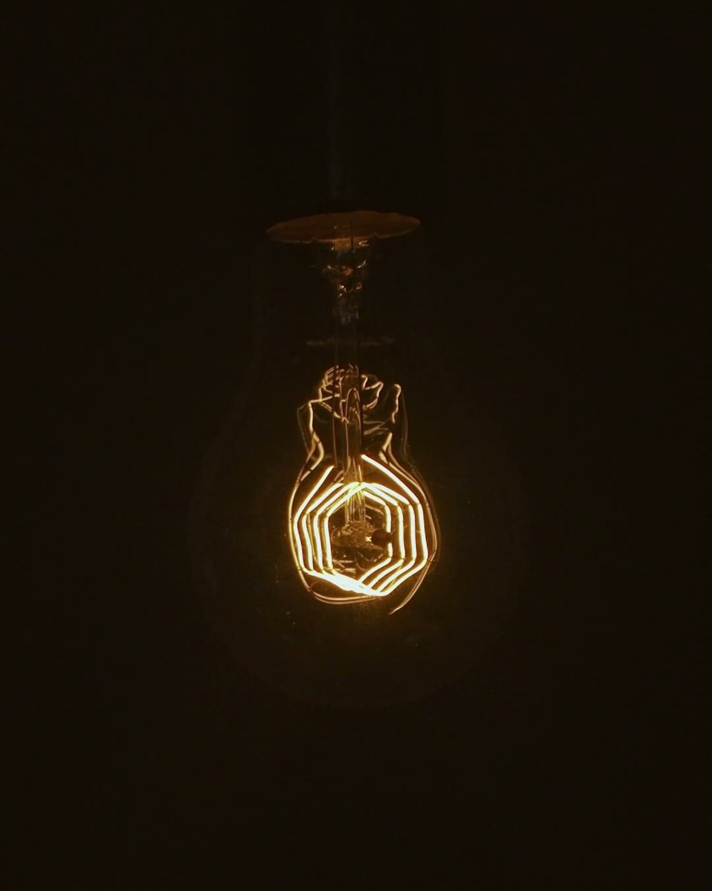

LED 전구, 와트만 보고 사면 후회하는 이유와 최대 39% 효율 차이
※ 이 글에는 제휴 링크가 포함되어 있으며, 링크를 통해 구매하시면 일정 수수료를 받을 수 있습니다. (가격은 같습니다)
※ 이 포스팅은 쿠팡 파트너스 활동의 일환으로, 이에 따른 일정액의 수수료를 제공받습니다.
11월에 들어서면 해가 일찍 져서 집 안에 불을 켜 두는 시간이 부쩍 길어져요.
불 켜는 시간이 늘어나는 지금이 집 안 전구를 한 번 살펴보기 좋은 때예요.
이 글에서는 LED 전구를 와트만 보고 고르면 왜 아쉬운지, 공식 시험 결과가 말하는 효율 차이, 그리고 아직 형광등을 쓰는 집이 알아 둘 점을 정리해 드릴게요.
한국소비자원이 2022년에 전구를 시험한 결과, 효율 높은 전구는 효율 낮은 전구보다 에너지를 최대 39% 아낄 수 있었어요.
그러니 전구를 고를 땐 와트보다 루멘부터 보는 것, 이것 하나만 기억하세요! 💡

LED 전구, 와트만 보고 고르면 생기는 일
전구를 살 때 다들 와트 숫자부터 보게 되죠.
그런데 와트는 전구가 쓰는 전기의 양이에요.
밝기를 알려 주는 숫자는 따로 있는데, 그게 바로 루멘이에요.
루멘은 빛의 양을 나타내는 단위라서, 숫자가 클수록 더 밝은 전구예요.
같은 와트라도 밝기가 다를 수 있고, 같은 밝기라도 쓰는 전기가 다를 수 있어요.
그래서 와트만 보고 고르면 생각보다 어두운 전구를 고르거나, 같은 밝기에 전기를 더 쓰는 전구를 고를 수 있어요.
소비자원 시험으로 본 LED 전구 효율 차이
한국소비자원은 2022년에 소비자가 많이 찾는 LED 전구 12개 제품을 시험했어요.
그 결과 가운데 전구를 고를 때 도움이 되는 숫자는 이래요.
- 효율 높은 전구: 효율 낮은 전구보다 에너지 최대 39% 절감
- 밝기: 제품에 따라 877에서 1,461루멘까지
같은 LED라는 이름을 달고 있어도 효율과 밝기가 제품마다 달랐다는 뜻이에요.
39%는 효율 낮은 전구와 견준 최대치라는 점도 같이 기억해 두세요.

소형LED전구도, 큰 전구도 루멘부터
크기가 작은 소형LED전구를 찾든 거실 천장용 전구를 찾든, 포장에 적힌 루멘 숫자를 먼저 보세요.
지금 쓰는 전구와 비슷한 루멘을 고르면 밝기가 크게 달라지지 않아요.
같은 루멘이라면 와트가 낮은 쪽이 같은 밝기를 더 적은 전기로 내는 전구예요.
상품 후기에서도 밝다는 말이 많이 나와요.
밝기가 마음에 들지는 결국 루멘 숫자로 미리 가늠해 볼 수 있어요.

고를 때 볼 점 3가지
루멘 말고도 고를 때 같이 보면 좋은 점을 우리 말로 정리했어요.
- 루멘: 지금 쓰는 전구와 비슷한 밝기인지
- 소켓: 빼낸 전구의 소켓 크기와 맞는지
- 빛 색: 하얀빛을 원하는지, 노란빛을 원하는지
특히 소형LED전구는 크기와 소켓이 지금 자리에 맞는지부터 보는 게 좋아요.
빛 색이 방마다 다르면 눈에 띄기 쉬우니, 같은 공간은 같은 색으로 맞추는 것도 방법이에요.
형광등 쓰는 집이라면, 형광등과 LED 비교
에너지공단 발표를 다룬 2019년 전기신문 보도에 따르면, 공공기관에서 70W 형광등 520만 개를 24W LED로 바꾼 결과 전기요금이 이렇게 달라졌어요.
- 70W 형광등: 764억 원
- 24W LED: 262억 원
공공기관 520만 개를 바꾼 경우의 숫자라 집집마다 그대로 들어맞지는 않아요.
다만 형광등과 LED의 차이가 어느 정도인지 보여 주는 숫자예요.

또 2023년 2월 산업통상자원부 고시 개정안 보도에 따르면, 2028년부터 기준에 못 미치는 형광램프는 국내 제조와 수입이 금지돼 사실상 시장에서 퇴출될 전망이에요.
아직 형광등을 쓰는 집이라면 다음에 바꿀 때 LED로 넘어갈지 미리 생각해 두면 좋아요.

정리
- 2022년 소비자원 시험에서 효율 높은 LED 전구는 효율 낮은 전구보다 에너지를 최대 39% 아꼈어요
- LED 전구는 와트보다 포장의 루멘부터 보세요
- 기준 미달 형광램프는 2028년부터 퇴출될 전망이에요
링크는 아래에 모아 두었어요.
📌 2026년 11월 기준 정보예요. 가격은 시기에 따라 달라질 수 있어요.
· 내 손안에 서울 — 한국소비자원 LED전구 12개 제품 시험 (고효율 제품 최대 39% 에너지 절감 · 광속 877~1,461lm)
· 에너지경제신문 — 소비자원 LED전구 시험 (2022년 10월 · 고효율 사용 시 최대 39% 절감)
· 전기신문 — 에너지공단 공공기관 70W 형광등 520만개 → 24W LED 교체 (요금 764억원 → 262억원 · 2019년)
· 에너지데일리 — 산업부 효율관리기자재 운용규정 개정안 (2028년부터 기준 미달 형광램프 제조·수입 금지 · 사실상 퇴출 전망 · 2023년 2월)
사진·영상영상 화면: Pexels (Anastasia Shuraeva, Artem Podrez, Coverr, Keegan Checks, KoolShooters, Nothing Ahead)
사진: Pexels (Róberi Lavicska)